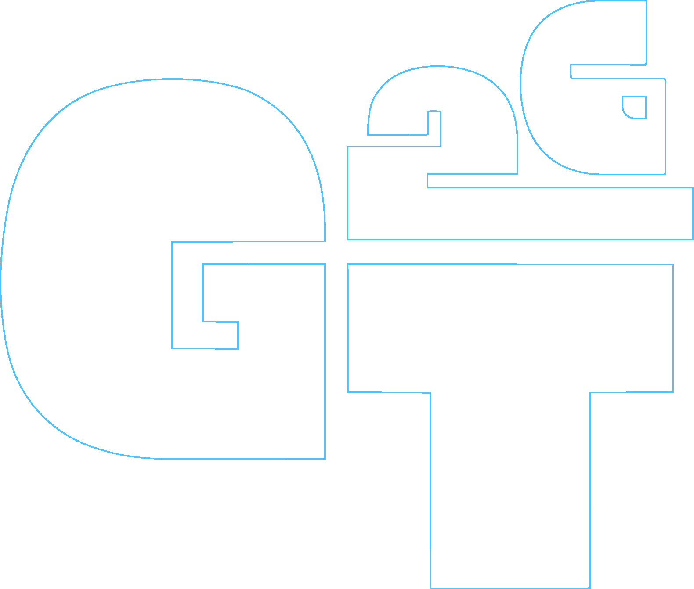
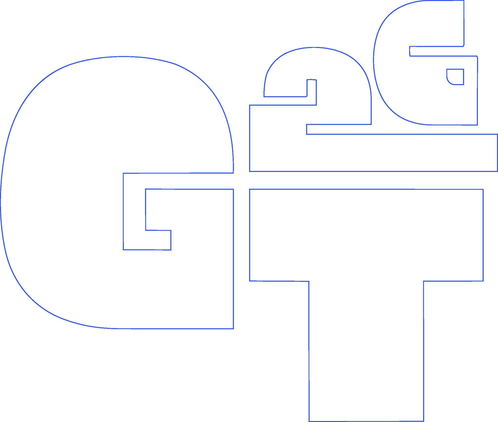
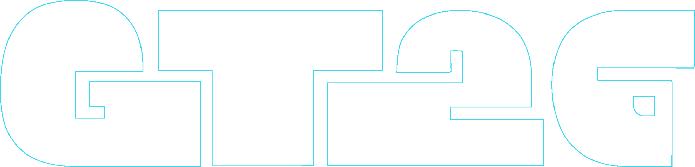

The creative side of AI with ElevenLabs
Daniela Huezo · ElevenLabs Ambassador
Hola, soy
Daniela Huezo
- 01Software Engineer, más de 5 años
- 02ElevenLabs Ambassador
- 03SpaceXAI Ambassador
- 04Armo comunidades para experimentar con IA
Estamos cansados de esto, ¿cierto?
No es que usen IA. Es que todos se ven iguales.
Juguemos al bingo de la publicidad con IA. Si un anuncio llena el cartón, ya lo viste mil veces.
La herramienta es la misma.
Lo que cambia son las decisiones.
Generar
Un prompt. Todo lo demás, por default.
El resultado: otra pieza del collage.
Dirigir
Una decisión humana en cada paso.
- 1Algo real
- 2La escena
- 3El movimiento
- 4El guion
- 5La voz
- 6La música
- 7El sonido
- 8La mezcla
Todo en un solo lienzo: ElevenCreative Flows.

Así se ve uno terminado.
Lo hice ayer, con un producto de prueba. Es el mismo flow que vamos a usar ahorita.
assets/ads/backup.mp4¿Alguien tiene algo que quiera vender?
Te hacemos ahorita el anuncio, el post para Insta y la foto para tu catálogo. Y te los llevas.
- 1¿Cómo te llamas y qué vendes?
- 2¿Qué tiene que no tenga ningún otro?
- 3¿Dónde te lo compran?
El flow
Un anuncio de verdadUn solo lienzo. Cada nodo es una decisión.
Empieza con algo real: el producto de verdad.
De una foto: el anuncio, el post y la foto de tu tienda.
Video sin audio: el sonido no se lo dejo al default.
Una voz que suena a persona, no a locutor.
Guitarra y marimba, no música épica. Suena a aquí.
Mismo flow, otro producto, otra historia.
EN VIVO
Estreno
Un anuncio de verdad, hecho en esta sala.
Todos tienen la misma IA. Tu diferenciador eres tú.
- 1Tu historia. Lo que la IA no sabe, nadie te lo puede copiar.
- 2Tu producto real. No uno de stock, el tuyo tal como es.
- 3Tu forma de hablar. Tu voz, tu barrio, los sonidos de aquí.
- 4Tu sello en cada pieza. Anuncio, post y catálogo, todos con tu estilo.

Para que tu anuncio no termine en el collage
- 1Empieza con algo real.
- 2Pide lo imperfecto.
- 3El guion lo escribes tú.
- 4No le dejes el sonido al default.
- 5La IA produce. La historia la pones tú.
No hay que odiar la IA.
Hay que saber usarla.
Gracias.
¿Preguntas?
Daniela Huezo · @tu_usuario